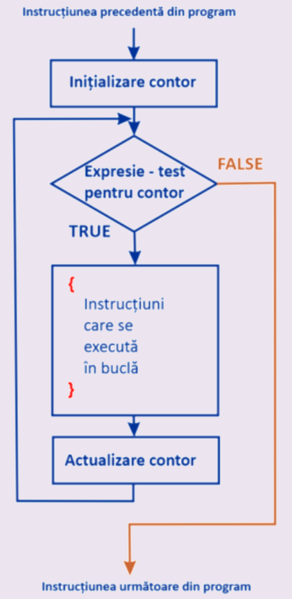

Ciclu cu contor
Instrucțiunea repetitivă sau ciclu realizează o execuția repetată a unei/unor acțiuni. În limbaje de
programare sunt utilizate mai multe cicluri. Primul reprezentant este ciclu cu contor. În cazul acestui
ciclu numărul de repetări este un număr fix și este cunoscut din timp. Ciclul dat este
FOR.
Ciclul dat indică execuția repetată a unor acțiuni pentru fiecare valoarea contorului din diapazonul specificat.
Parcurgerea valorilor poate fi atât în creștere, cât și în descreștere; atât pentru fiecare valoare a
contorului, cât și pentru pasul specificat (al doilea, al treilea, etc.).

Sintaxa:
for (contor=vi; contor operator vf; pas) {//blocul acțiunilor ce se execută repetat}Atenție
Operator este relațional: <, <=, >, >=, !=, ==.
Pas indică direcția de parcurgere a valorilor contorului: ascendentă (în creștere/incrementare) sau descendentă (în descreștere/decrementare).
Pas indică direcția de parcurgere a valorilor contorului: ascendentă (în creștere/incrementare) sau descendentă (în descreștere/decrementare).
Exemplu:
- for (i=1; i<=5; i++) {a=i*i; cout<<a<<' ';}
- Contorul i va lua valoarea inițială 1.
- Se verifică dacă valoarea contorului nu a ieșit din domeniul (i<=5), dacă condiția este adevărată - se execută blocul din acolade și anume se calculează pătratul valorii lui i și după această se afișează pe ecran valoarea calculată urmată de un spațiul, în caz contrar execuția ciclului se încheie și se trece la următoarea instrucțiunea de după For.
- Corespunzător pasului indicat (i++) se facă incrementarea valorii contorului, adică mărirea lui cu o unitate și se revine la verificarea valorii contorului descris în pasul precedent.
Pentru exemplificare propunem o problemă: Se citește de la tastatură un număr N. Se cere afișarea următoarelor 10 valori.
- #include <iostream>
- using namespace std;
- int main()
- {
- int n;
- cout<<"Dati numarul n:"<<endl;
- cin>>n;
- for (int i=n+1; i<=n+10; i++) cout<<i<<' ';
- return 0;
- }
Rezultatul execuției acestui program va fi:
Dati numarul n:
7
8 9 10 11 12 13 14 15 16 17
Exemplu:
- Pentru problema prezentată dacă dorim afișarea valorilor în descreștere facem următoarea modificare:
- for (int i=n+10; i>=n+1; i--) cout<<i<<' ';
- Pentru afișarea primelor 4 numere impare:
- for (int i=1; i<=7; i+=2) cout<<i<<' ';
Sarcina:
Elaborați un program ce va realiza: Afișarea pe ecran a literelor alfabetului englez de la Z pînă la A.
Pentru realizarea sarcinii puteți utiliza zona de mai jos a editorului.
Mai multe probleme puteți găsi în
Problemar pag.35-44.
Pentru realizarea sarcinii puteți utiliza zona de mai jos a editorului.